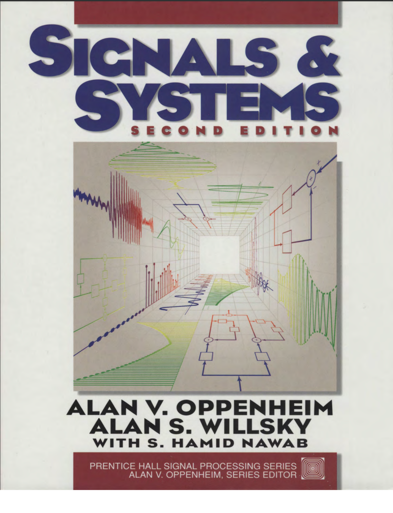

Computer Security Fundamentals

Ce guide d’introduction à la sécurité informatique présente en un seul volume les concepts, enjeux et technologies essentiels pour comprendre, détecter et contrer les menaces actuelles. Rédigé par Chuck Easttom, expert et formateur, il aborde :
Les notions de base : terminologie, modèles de menaces et bonnes pratiques réseau.
Les principales attaques (web, DoS, malwares, ingénierie sociale) et leurs contre‐mesures.
La mise en place d’une défense en profondeur (pare‐feu, VPN, appliances de sécurité).
Le chiffrement, la gestion des mots de passe et l’élaboration de politiques de sécurité.
Les techniques de scan de vulnérabilités et d’analyse forensique.
Les défis émergents liés à l’Internet des objets et à la cyberguerre.
Chaque chapitre propose exercices et projets pour appliquer les notions, faire évoluer vos compétences et préparer une carrière dans la sécurité informatique.
Embedded Systems: Real-Time Operating Systems for ARM Cortex-M Microcontrollers

Embedded Systems: ARM Cortex‑M, Volume 3 (4ᵉ éd., janvier 2017) est le dernier volet d’une trilogie consacrée aux systèmes embarqués sur microcontrôleurs ARM Cortex‑M. Destiné aux étudiants en fin de licence/master et aux ingénieurs souhaitant concevoir leur propre système d’exploitation temps‑réel (RTOS), il s’appuie sur les plates‑formes TI TM4C123, TM4C1294 et MSP432. Cet ouvrage couvre : les concepts et la mise en œuvre d’OS temps‑réel, l’interfaçage haute vitesse (Ethernet, UART, SPI, I²C), le contrôle de moteurs et le traitement du signal (filtres analogiques/numériques), les applications Bluetooth et IoT. Chaque chapitre propose des exemples détaillés, des checkpoints pour auto‑évaluation et des exercices pratiques. Les laboratoires EE445M/EE380L, ainsi que des projets Keil uVision et ressources (datasheets, tableurs) sont disponibles en ligne pour approfondir la mise en œuvre.
Signals and Systems

Ce manuel fondamental, coécrit par Alan V. Oppenheim et Alan S. Willsky, introduit les concepts clés de l’analyse des signaux continus et discrets ainsi que les systèmes linéaires invariants dans le temps.
Il couvre :
– La classification des signaux (périodiques, causaux, déterministes).
– Les systèmes LTI, la convolution et la réponse impulsionnelle.
– L’analyse fréquentielle avec les séries et transformées de Fourier.
– L’échantillonnage, le filtrage et le traitement numérique des signaux.
– Les outils mathématiques comme la transformée de Laplace et la transformée en Z.
Essentiel pour tout étudiant ou professionnel en électronique, automatique, télécommunications ou traitement du signal.
Modern Operating Systems

Rédigé par Andrew S. Tanenbaum, ce livre explore les fondements des systèmes d’exploitation modernes avec rigueur et clarté. Il mêle théorie, architecture logicielle et implémentations pratiques (Linux, Windows, Android).
Il aborde :
– Les processus, threads, synchronisation et planification.
– La gestion mémoire, le swapping, le paging et la mémoire virtuelle.
– Les systèmes de fichiers, le stockage et l’I/O.
– La sécurité informatique et les permissions système.
– Les systèmes distribués, RPC, cohérence et synchronisation réseau.
Indispensable pour les étudiants en informatique, développeurs système et ingénieurs réseaux.